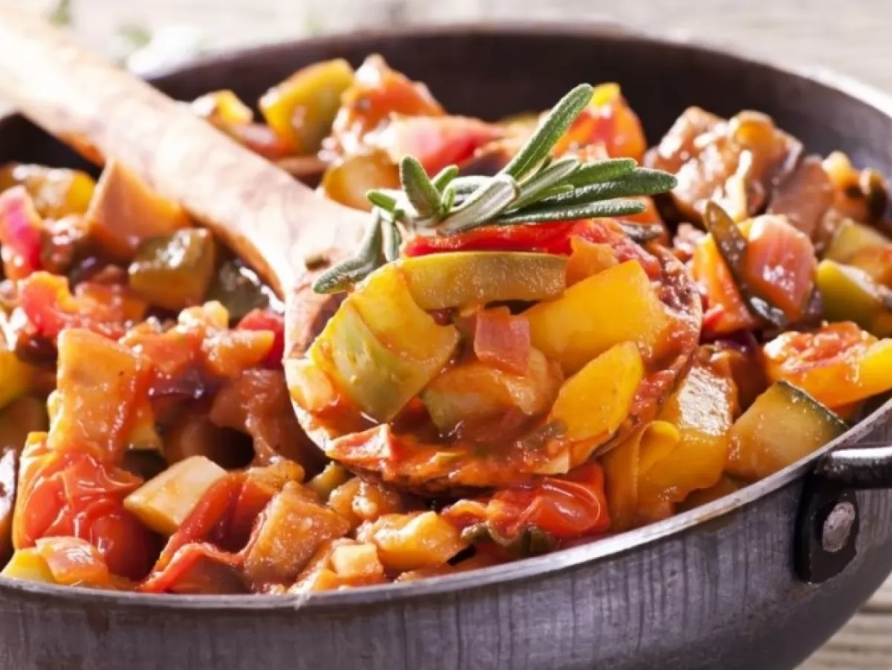
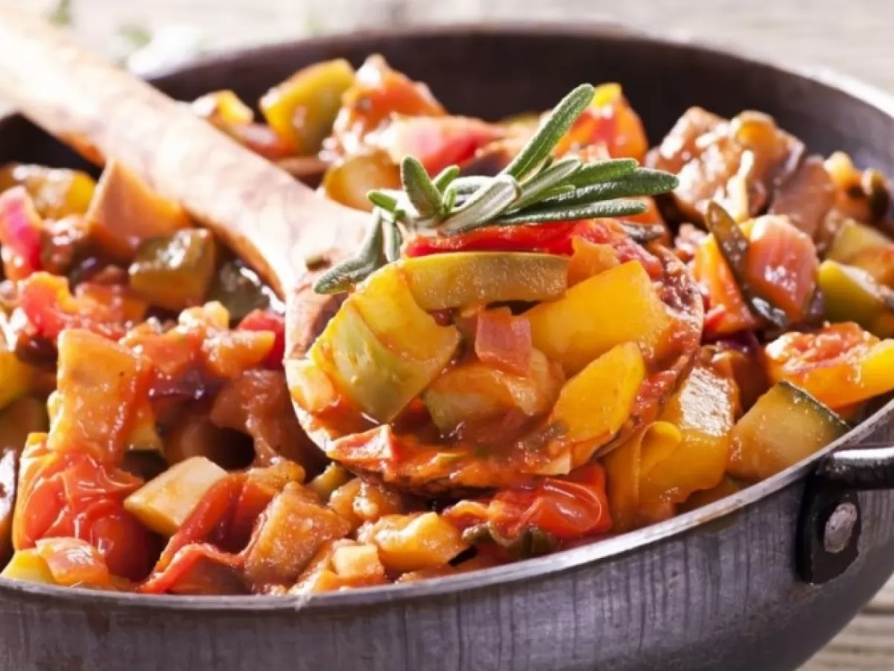

Українські рагу
Українські рагу - це традиційна українська страва, яка готується з м'ясом та овочами. Вона має багатий смак і аромат, і є популярною в українській кухні.
Українські рагу - це традиційна українська страва, яка готується з м'ясом та овочами. Вона має багатий смак і аромат, і є популярною в українській кухні.
